Hitachiota, Ibaraki: things to do, food and stays
Hitachiota · Ibaraki
Hitachiota
Highlighted on the Ibaraki map.

Stay
ビジネスホテル塩原
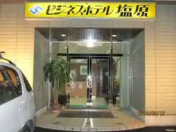
Business Hotel Shiobara
Hotel in Kanai, Hitachiota with business travelers.
HOTEL R9 The Yard 常陸太田
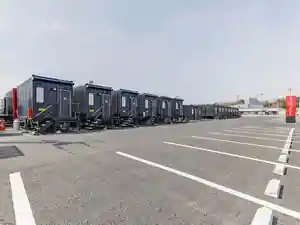
HOTEL R9 The Yard Hitachiota
新・西山荘カントリー倶楽部
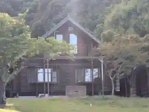
Shin Nishiyama So Kantori Kurabu
出羽の湯 宝来館
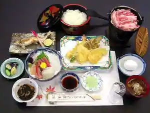
Dewa No Yu Horai Kan
Inn at Omotenashino Onsen in Tanatani, Hitachiota.
Dining
慈久庵
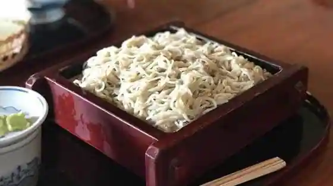
Ji Kyu Iori
鯨荘 塩町館
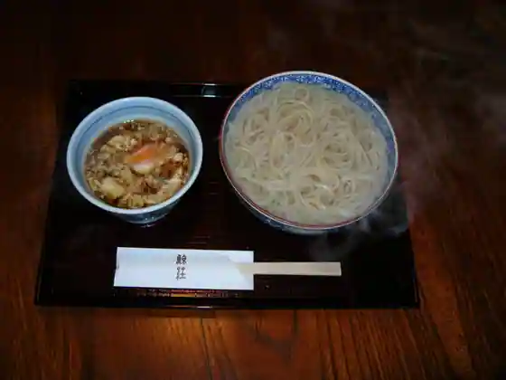
Kujira So Shiomachi Kan
そば園 佐竹
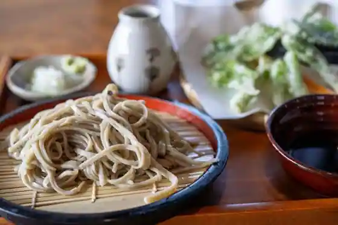
Soba Sono Satake
そば処 かねさん
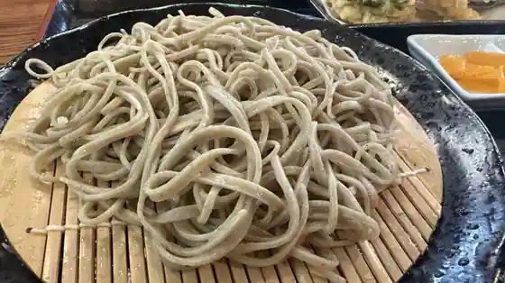
Soba Tokoro Kanesan
釜平
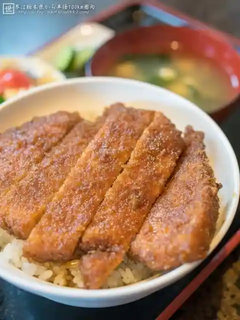
Kama Taira
SOVA TEA 越路
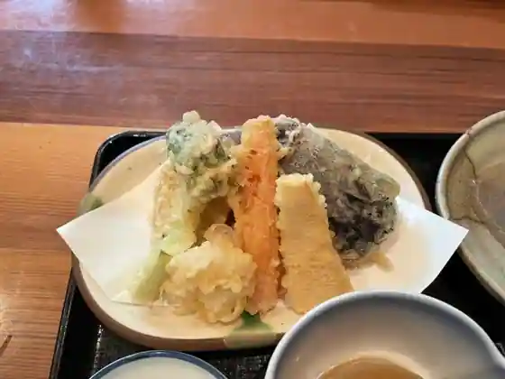
SOVA TEA Koshiji
登喜和家
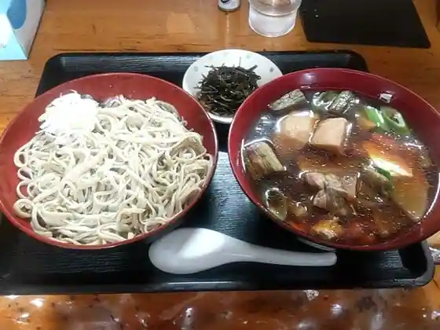
Tokiwa Ie
いづみや 本店
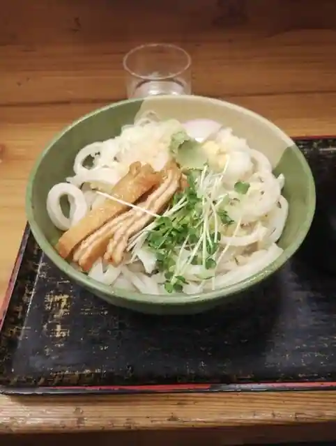
Izumiya Hon
そば処 いい友
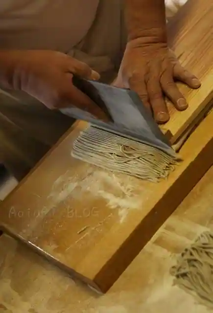
Soba Tokoro I Tomo
赤土
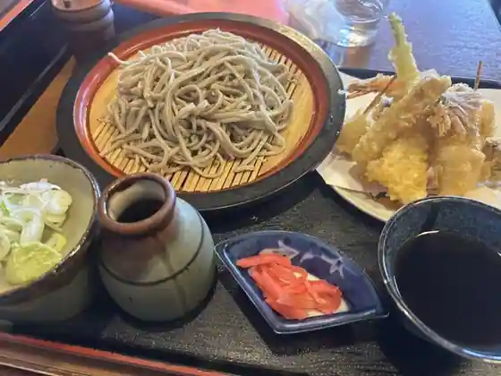
Shakudo
そば処 金砂そば
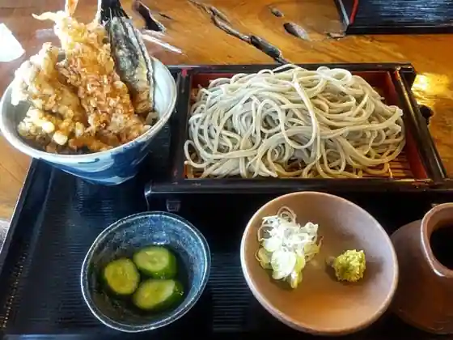
Soba Tokoro Kinsha Soba
西金砂そばの郷 そば工房
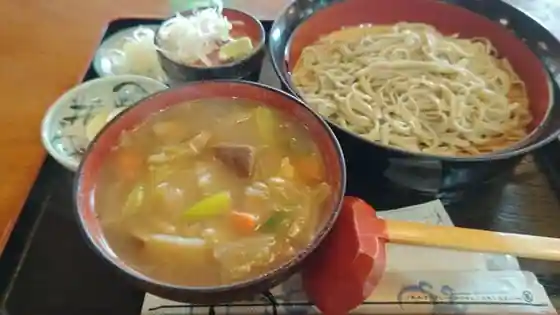
Nishi Kinsha Sobano Sato Soba Kobo
夢玄
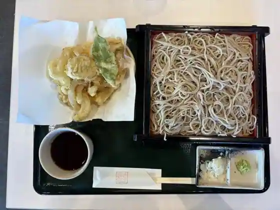
Yume Gen
咸亨酒店
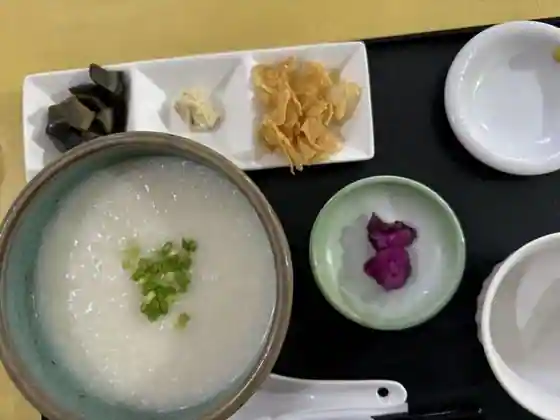
Kanko Sake
いづみや 東バイパス店
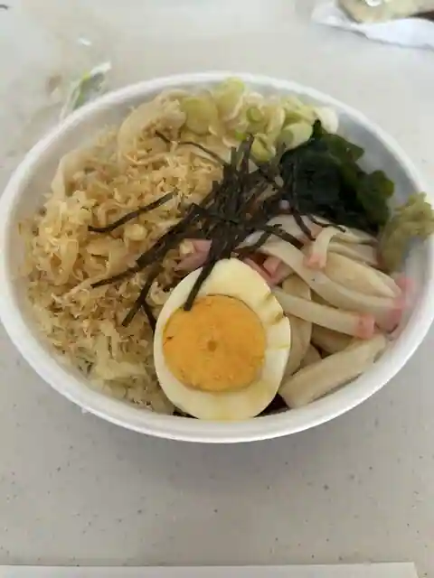
Izumiya Higashi Baipasu
道の駅 ひたちおおた 黄門の郷
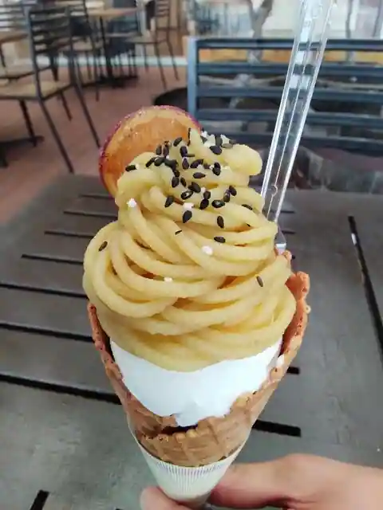
Michi No Eki Hitachiota Komon No Sato
坂東太郎 常陸太田総本店
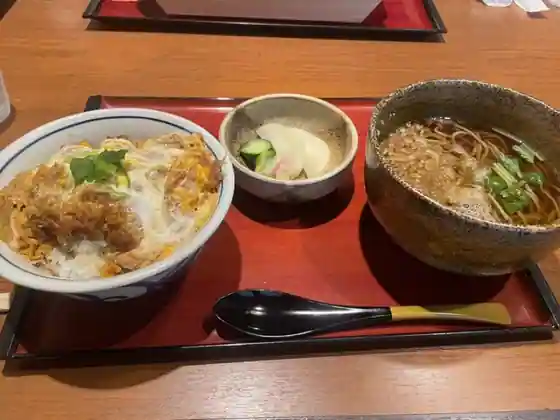
Bando Taro Hitachiota So Hon
ヒタチジェラード
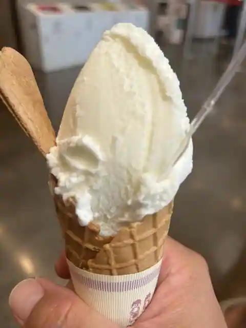
Hitachijierado
竜神庵 太田店
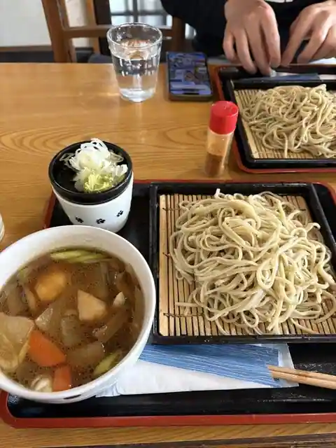
Ryujin Iori Ota
JA茨城みずほ里美生産物直売所
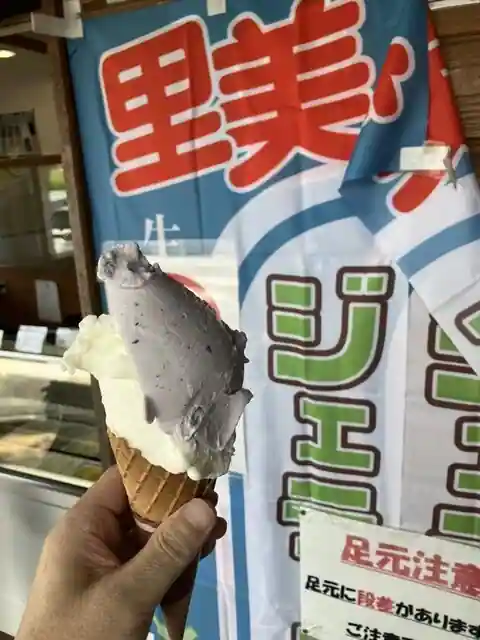
JA Ibaraki Mizuho Satomi Seisanbutsu Chokubai Tokoro
そば なか美
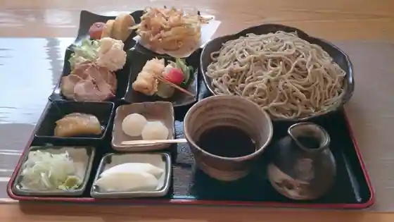
Soba Naka Bi
スパ＆ゴルフリゾート久慈
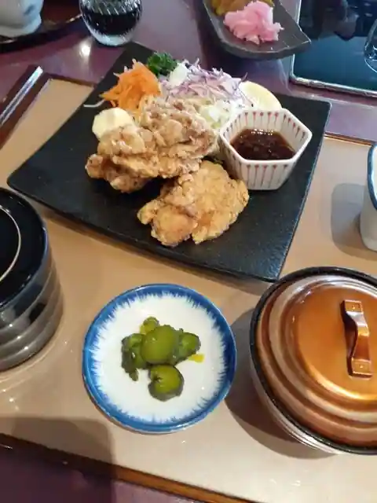
Supa & Gorufu Resort Kuji
水府物産センターレストラン 森の風
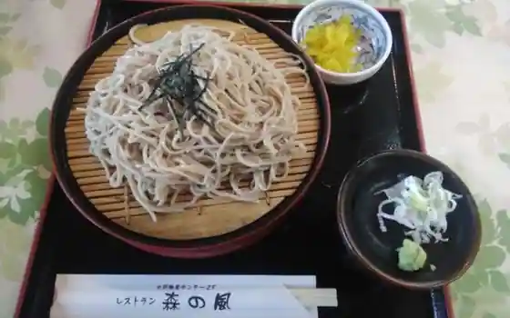
Suifu Bussan Center Restaurant Mori No Kaze
レストラン こぐま
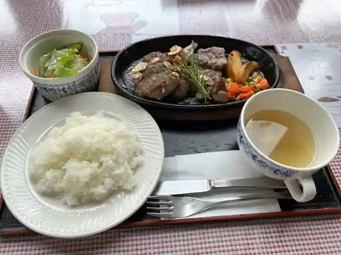
Restaurant Koguma
Sights
Genji Kawa no Higan Hana (Genji Kawa no Higan Hana Wo Hozon Suru Kai)

Ryujin Dai Tsuribashi

Kujiragaoka Shopping Street

Roadside Station Satomi

Roadside Station Hitachiota Komon no Sato
Inaka no Omotenashi Iwakura Kosen
Tokugawa Museum Bunkan Nishiyama Goten
Satomi Onsen Hoyo Center Nuku Mori Baths
Nishiyama Village Togen
Purato Satomi
Satake Tera
Kamegafuchi
Nishi Kinsha Soba no Sato Soba Workshop
Ryujin Dam
Hiyama Orchard
Forest of THEN (Kyuri Mino Soto Katsudo Center)
Furusato Center Ryu Tchan no Yu
(Mokusei no Kane) (Ryujin Kariyon)
Ota Onsen Yamabuki Baths
Hitachiota Kyoho Budo Kanko Sono
Yonebishi Shoyu (Kabu)
JA Ibaraki Mizuho Suifu Nosambutsu Chokubai Tokoro
JA Ibaraki Mizuho Satomi Seisambutsu Chokubai Tokoro
Suifu Bussan Center Resutoran Mori no Kaze
Shichi Han no Shidare Sakura
Suifu Ryu no Sato Park
Nishiyama Park
Makura Ishidera
Mito Hakkei (Ota Rakugan)
Mito Hakkei (Yamadera Bansho)
Setsuko no Ichigo Sono
Senpuku Tera no Shidarezakura
Satomi Fureai Kan
JA Ibaraki Mizuho Hitachiota Bussan Center (Kome Workshop)
RestaurantcafeSweet (Resutorankafesuiito)
JA Ibaraki Mizuho Chokubai Center (Seya no Kei)
Okabe